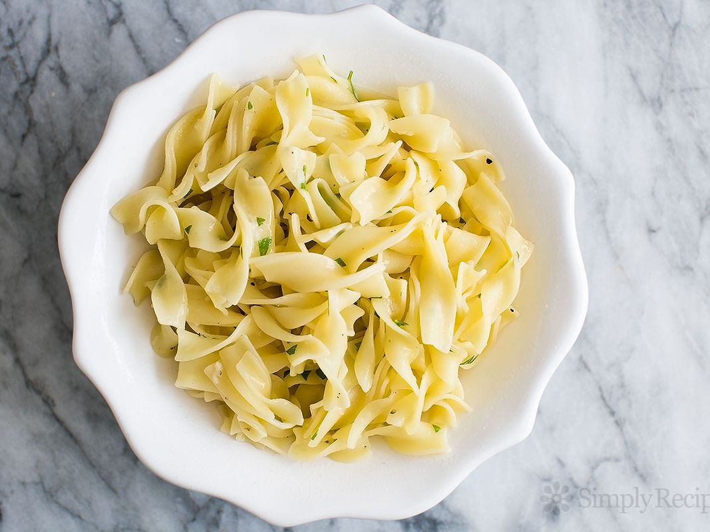

Buttered Noddles

Description
Buttered Noddles! A favorite dish of Abed Nadir. Buttered noodles are buttery, noodley, delicious, and easy to make.
Ingredients
- Butter
- Noodles
- Salt and Pepper
- Bowl
Steps
- Bring water to a boil
- Boil noodles to your desired softness
- Drain pasta water and place hot pasta in a bowl
- Add butter, salt, and pepper for taste
Back to home